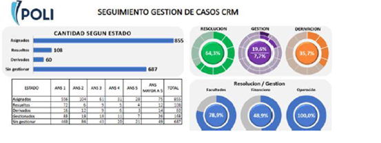
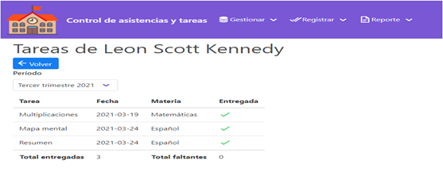
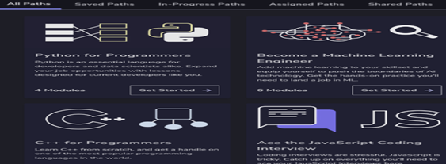

Sistema Gestion Academica PolitecnicoGrancolombianoDesarrollé un sistema de gestión académica personalizado para el Politécnico Gran Colombiano para mejorar la eficiencia y la gestión de sus procesos académicos. |
Aplicación de Gestión de Tareas para EstudiantesLa aplicación se basó en tecnologías web y móviles, incluyendo HTML5, CSS3 y JavaScript. Fue diseñada para ayudar a los estudiantes a administrar sus tareas y proyectos de manera efectiva. |
Plataforma de Tutoriales en Línea para ProgramaciónColaboré en el desarrollo de una plataforma de tutoriales en línea que brinda recursos educativos para estudiantes y profesionales interesados en la programación. Los tutoriales abarcan una amplia variedad de temas y tecnologías. |
Mi viaje en el mundo de la tecnología y el desarrollo web ha estado marcado por proyectos innovadores y logros significativos. Como desarrollador web y profesional en ingeniería de sistemas, he tenido la oportunidad de trabajar en una variedad de proyectos que han demostrado mi experiencia y habilidades.